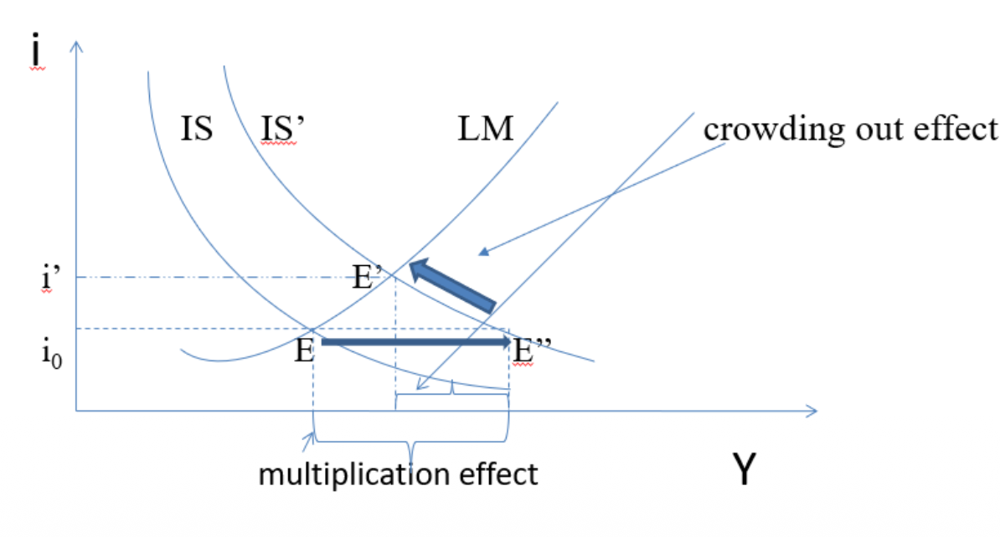
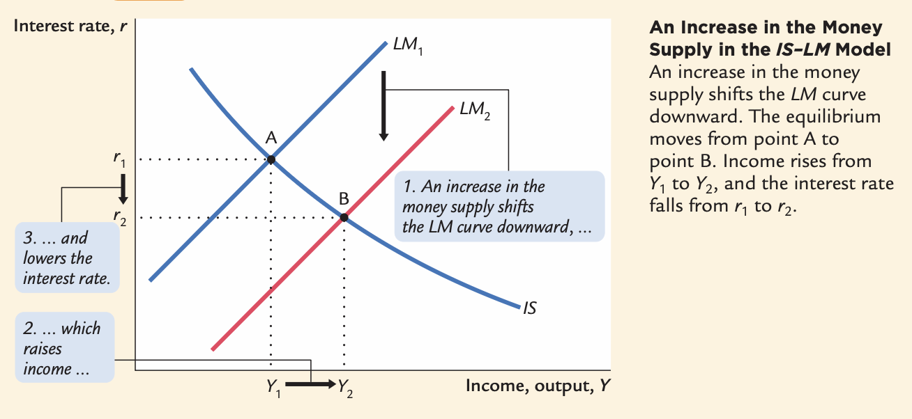
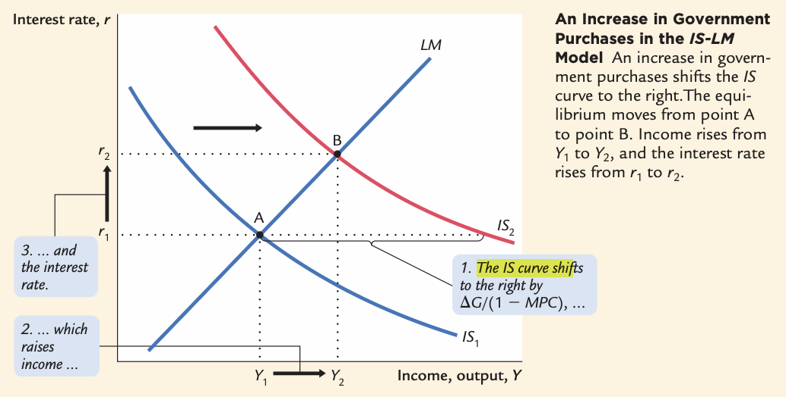
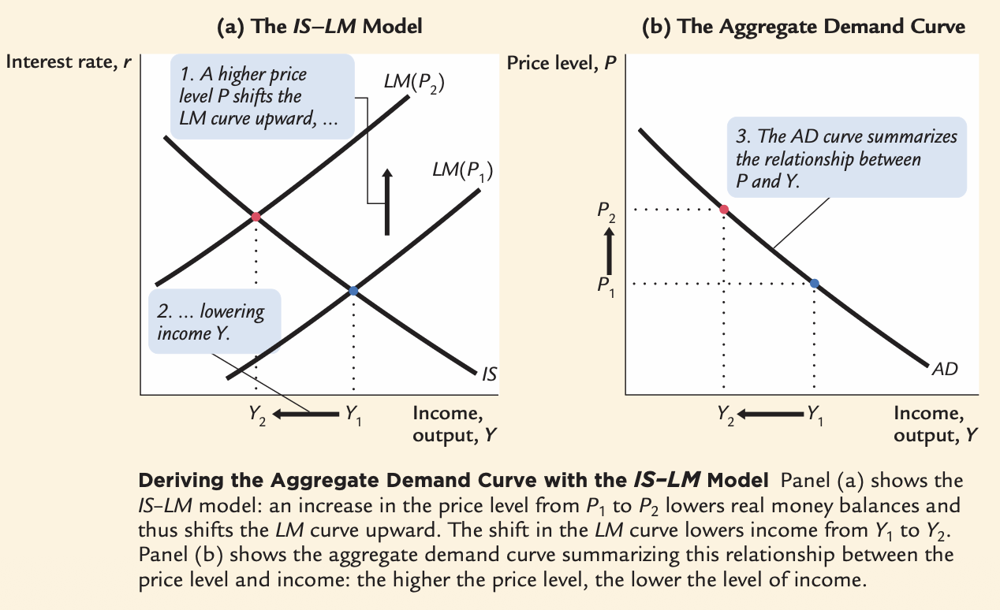

IS-LM and AD Applications
Multipliers, Crowding Out, Deflation, and the Great Depression — Janíčko, Macroeconomics II
Multipliers at Work
Ceteris paribus, an increase in government purchases leads to an even greater increase in income. This is the multiplier effect.
$\Delta Y$ is higher than $\Delta G$. The ratio $\frac{\Delta Y}{\Delta G}$ is the government-purchases multiplier: it shows how much income changes in response to a one-unit change in government purchases.
Fiscal policy has a multiplying effect because the increase in income leads to an increase in consumption, which in turn leads to another increase in income which again raises consumption, and so on.
A change in taxes also has a multiplicative effect. A decrease in taxes by $\Delta T$ immediately raises disposable income by $\Delta T$, leading to an increase in consumption by $MPC \times \Delta T$.
Interest Rates and the Size of the Multiplier
In practice, the size of the multiplier depends on how strongly interest rates respond, so it may differ across monetary-policy regimes.
The Crowding Out Effect
As we have already seen, one effect of fiscal stimulation is the shift of the IS curve and an increase in income level. But a second effect occurs simultaneously:
- As equilibrium income rises, the demand for money increases.
- If real money balances are unchanged, the equilibrium interest rate rises.
- The higher interest rate reduces interest-sensitive components of demand, especially private investment.
Thus, expansionary fiscal policy (increase in government spending or decrease in taxes) causes crowding out of private investment.

Policy Applications
An Increase in the Money Supply
In the traditional IS-LM model, expansionary monetary policy is represented as an increase in real money balances, which shifts the LM curve to the right. This is a useful benchmark for thinking about monetary transmission, although modern central banks usually implement policy by targeting a short-term interest rate.

An Increase in Government Purchases

The Response of the Economy to a Tax Increase

Why the Constant-Interest-Rate Case Matters
Fixed Money Supply
Fiscal expansion raises money demand and pushes the interest rate up. This is the standard IS-LM crowding-out result.
Fixed Interest Rate
The central bank accommodates higher money demand by supplying liquidity. This case is therefore closer to modern monetary policy practice.
The fixed interest rate case provides a natural bridge from the traditional LM curve to the modern MP curve.
From LM to MP
In the traditional IS-LM model, monetary policy works through changes in real money balances and shifts in the LM curve. In practice, modern central banks usually set a policy interest rate rather than the money supply.
This motivates the IS-MP framework, where the MP curve replaces LM:
- The MP curve shows how the central bank sets the policy interest rate in response to macroeconomic conditions.
- A lower policy rate reduces the real interest rate, stimulates investment and demand, and raises equilibrium output.
- Thus, for policy applications, IS-MP is often more realistic than IS-LM.
Demand and Policy Shocks
Fiscal and monetary policy are not the only forces that move the economy.
IS Shocks
Exogenous changes in desired spending on goods and services:
- Changes in business confidence and investment.
- Changes in household consumption.
- Changes in foreign demand for exports.
LM Shocks
Exogenous changes in money demand:
- Financial uncertainty.
- Changes in liquidity preference.
- Institutional or regulatory changes affecting money holdings.
Deriving the Aggregate Demand Curve

The Effective Lower Bound (ELB)
The effective lower bound arises when nominal policy rates are very close to zero and cannot be reduced much further by conventional means.
- If expected inflation falls, real interest rates $r = i - \pi^e$ may remain too high.
- As a result, aggregate demand can remain weak even when policy rates are very low.
- In this environment, fiscal policy may be especially powerful, while central banks may rely on unconventional tools such as forward guidance and asset purchases.
- Central banks cannot use conventional rate cuts to boost demand.
- Households and firms expect prices to fall, postponing spending.
- Fiscal policy (government spending) becomes the main tool for stimulus.
The Liquidity Trap
The idea of a liquidity trap goes back to Keynes and later interpretations by Hicks and others.
At very low nominal interest rates, the demand for liquid assets may become highly elastic. In that case:
- Increases in money supply may have little effect on interest rates and spending through conventional channels.
- Investment may remain weak even when nominal rates are close to zero.
- This helps explain why recessions near the effective lower bound can be especially persistent.
The Great Depression: Competing Explanations
Shocks to the IS Curve
The spending explanation asserts that the Depression was largely due to an exogenous fall in the demand for goods & services — a leftward shift of the IS curve.
Evidence: Output and interest rates both fell, which is what a leftward IS shift would cause.
- Stock market crash: exogenous shock to $C$. Oct–Dec 1929: S&P 500 fell 17%. Oct 1929–Dec 1933: S&P 500 fell 71%.
- Drop in investment: "Correction" after overbuilding in the 1920s. Widespread bank failures made it harder to obtain financing for investment.
- Contractionary fiscal policy: Politicians raised tax rates and cut spending to combat increasing deficits.
Shocks to the LM Curve
The money explanation asserts that the Depression was largely due to a huge fall in the money supply. Evidence: M1 fell 25% during 1929–33.
However, the interpretation is not straightforward:
- $P$ fell even more, so $M/P$ actually rose slightly during 1929–31.
- Nominal interest rates fell, which does not look like a standard textbook leftward LM shift.
- But deflation raised real interest rates, and banking distress tightened effective credit conditions.
Falling Prices: Stabilising and Destabilising Effects
The severity of the Depression was related to a huge deflation: $P$ fell 25% during 1929–1933. This deflation was likely driven by monetary contraction, collapsing demand, and financial distress.
The Stabilising Effects of Deflation
Keynes Effect:
$\downarrow P \Rightarrow \uparrow \frac{M}{P} \Rightarrow$ LM shifts right $\Rightarrow \uparrow Y$
Pigou Effect:
$\downarrow P \Rightarrow \uparrow \frac{M}{P} \Rightarrow$ consumers' "wealth" $\uparrow$ $\Rightarrow \uparrow C \Rightarrow$ IS shifts right $\Rightarrow \uparrow Y$
The Destabilising Effects of Expected Deflation
$\downarrow \pi^e \Rightarrow \uparrow r$ for each value of $i$ $\Rightarrow \downarrow I$ because $I = I(r)$ $\Rightarrow$ planned expenditure & AD $\downarrow$ $\Rightarrow$ income & output $\downarrow$
The Destabilising Effects of Unexpected Deflation
$\downarrow P$ (if unexpected)
$\Rightarrow$ transfers purchasing power from borrowers to lenders
$\Rightarrow$ borrowers spend less, lenders spend more
$\Rightarrow$ if borrowers' propensity to spend is larger than lenders', then aggregate spending falls, the IS curve shifts left, and $Y$ falls.
What Have We Learned?
Aggregate Demand from IS-LM
- For a given price level, the intersection of IS and LM determines equilibrium output.
- A higher price level reduces real money balances, shifts the LM curve left, and lowers equilibrium output.
- This gives a downward-sloping aggregate demand curve in $(P, Y)$ space.
- In modern macroeconomics, the analogous demand relationship is often derived from an IS-MP framework instead, and using inflation rather than the price level as such.
End of IS-LM & AD Applications. Utilizing Codex Logic standards.